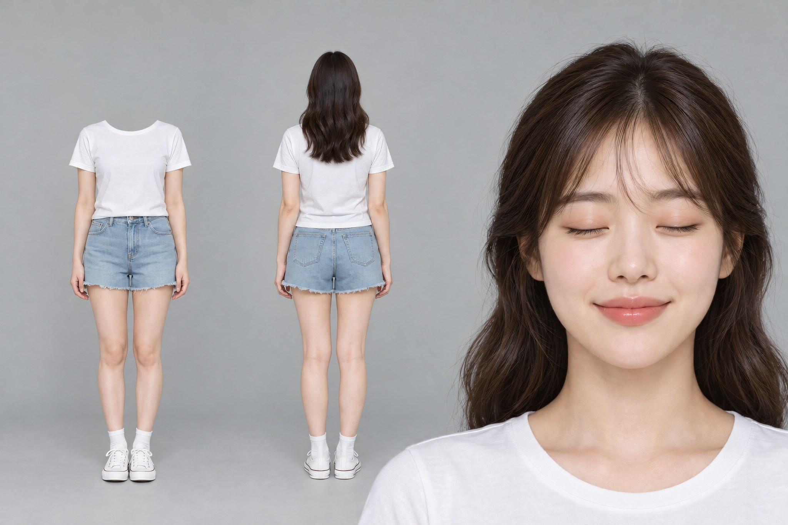
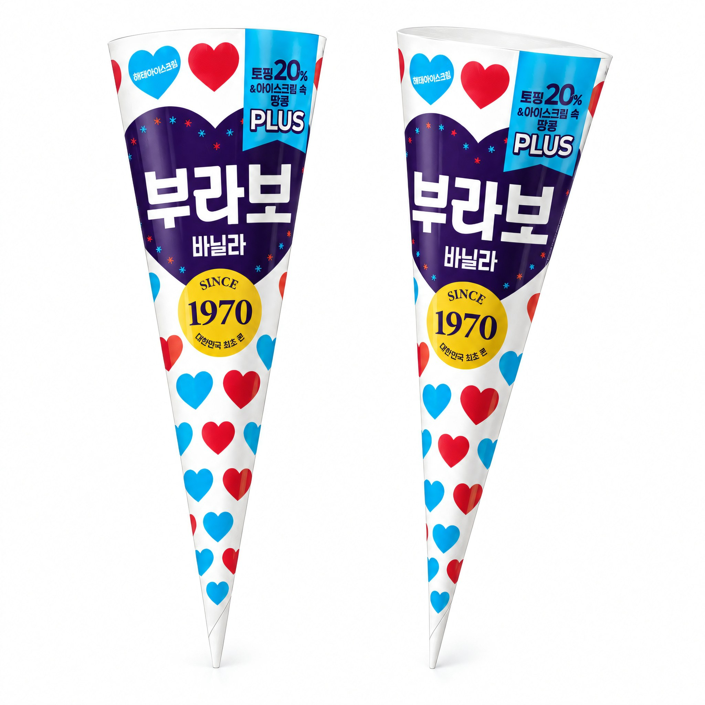
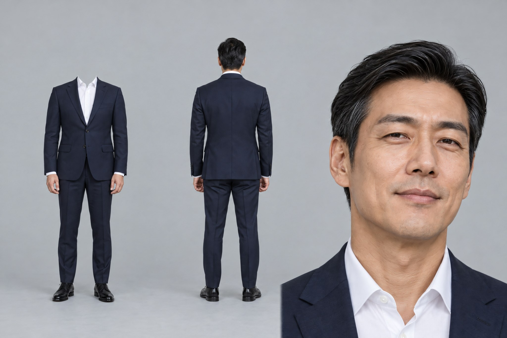
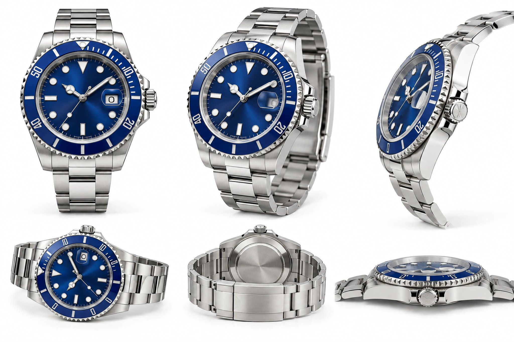
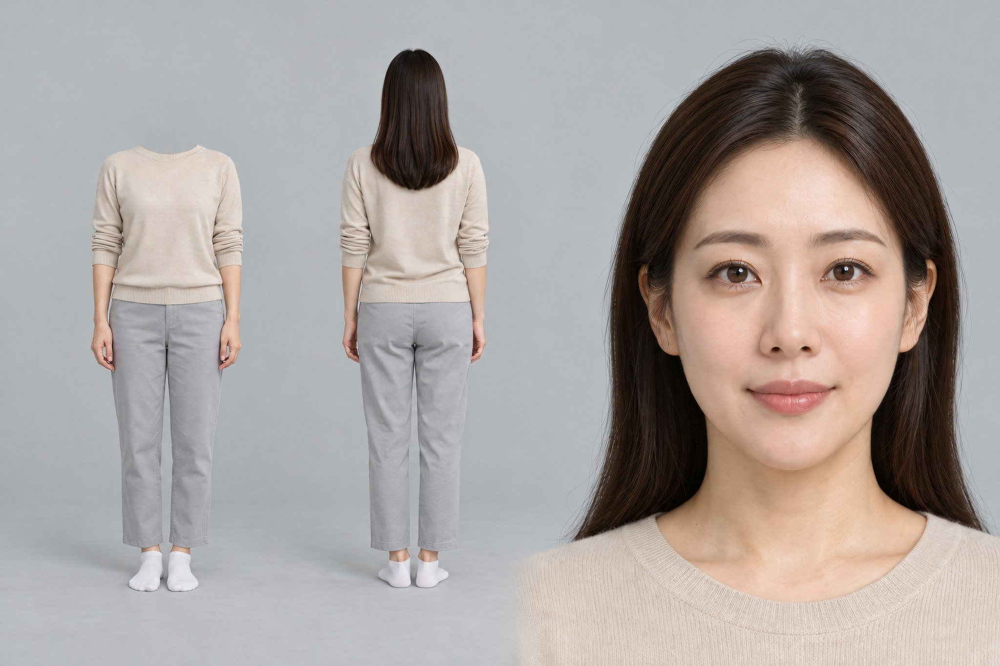
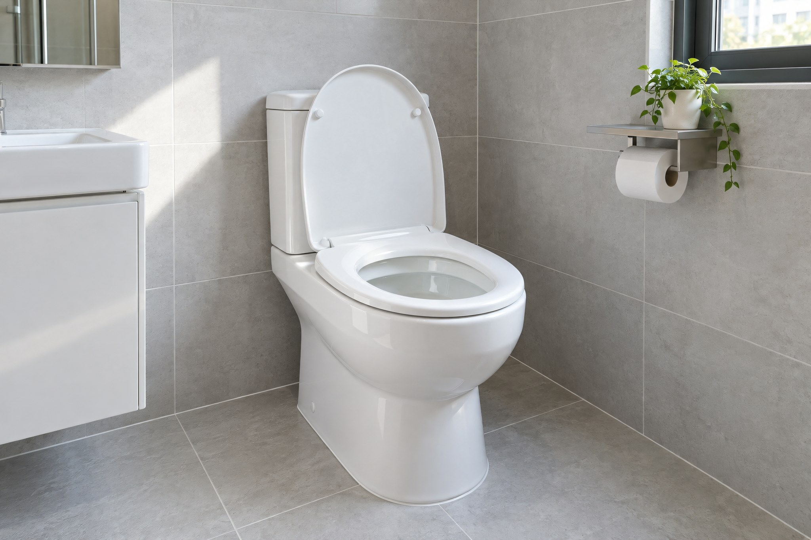
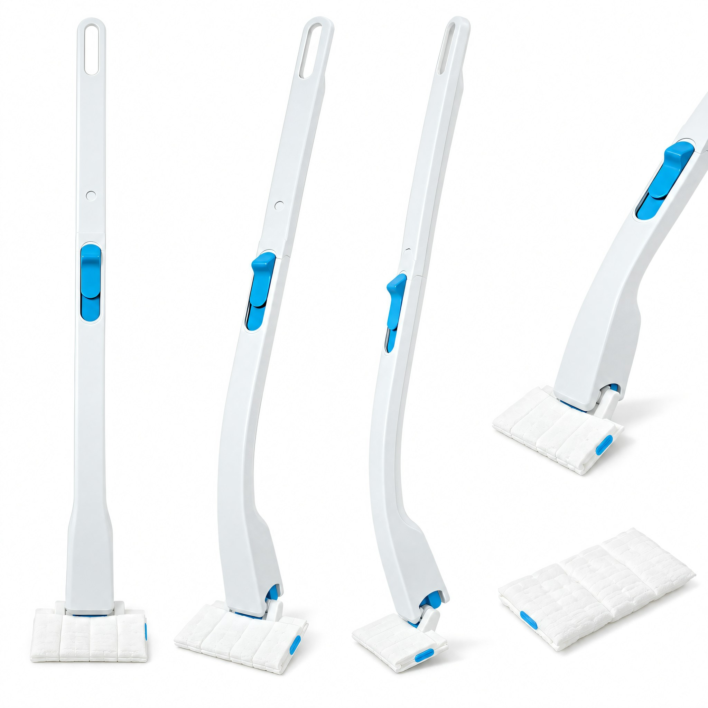
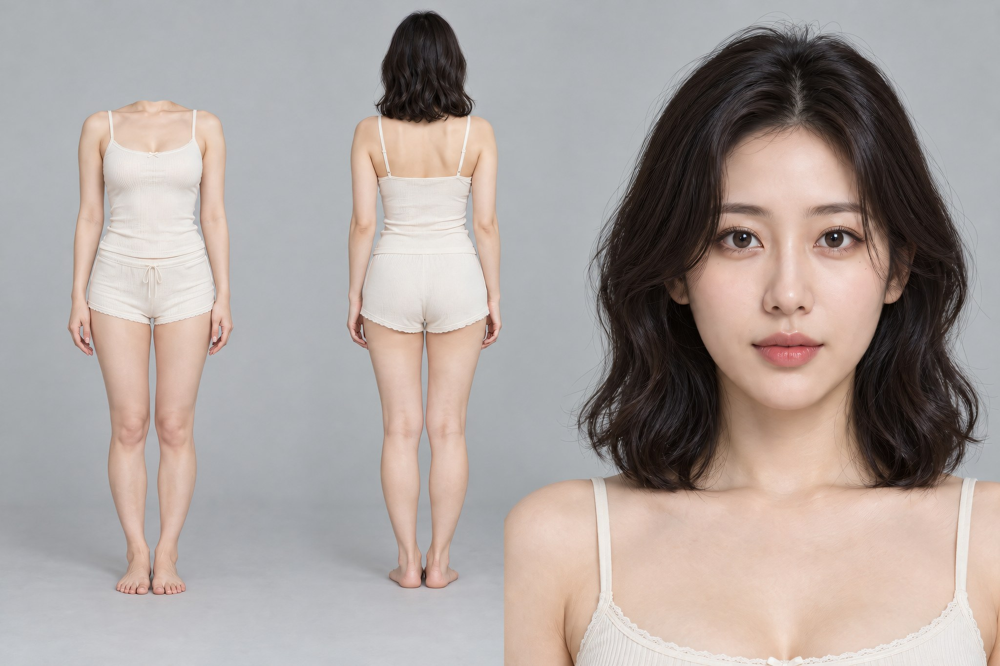
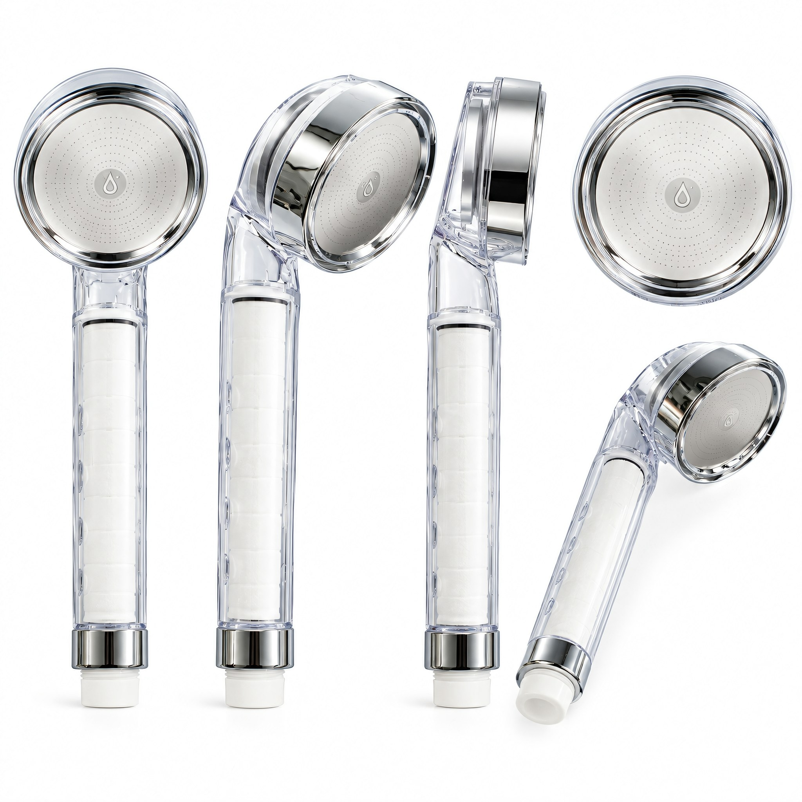

엔진 v2.2 사진 시험
10-30 · 사진 단계를 구독 GPT 로(0cr) 바꾸고 2K 업스케일·앵커 틀을 넣은 결과입니다. 왼쪽이 v2.1, 오른쪽이 v2.2 입니다. 그림을 누르면 원본 크기로 열립니다. 영상은 아직 돌리지 않았습니다.
기획 한 줄
기획서 전문 보기
# plan — 부라보콘 바닐라 (v2 · 강한 장면 하나)
작성: 2026-10-30 part=plan
스타일: 기발 · 이유 — 장치가 제품 이름 "부라보(Bravo)"이고, 세상이 한 입에 기립 박수를 보내는 동화 같고 유쾌한 사건이 핵심이라 "크게"보다 "기발"이 자연스러움. 레트로 친근감·유쾌한 톤(brief)과도 맞음. (mood=auto)
장치: 이름이 현실 — 제품 이름 "부라보(Bravo)"가 세상의 실제 반응(기립 박수·"브라보!" 함성)으로 나타남.
장면: 더운 날 거리에서 여성이 콘을 한 입 '바삭' 베어무는 순간, 그 바삭 소리에 주변 거리 전체가 웅장한 오페라 극장으로 바뀌고 관중이 일제히 일어나 "브라보!"를 외치며 박수를 친다. 여성은 태평하게 씹으며 가볍게 고개만 숙인다.
왜 이 제품: 제품 이름 "부라보(Bravo)" + 광고주 포인트 원문 "마지막 한 입까지 유지되는 바삭한 식감"(brief.json) → 바삭한 한 입에 세상이 "브라보!"로 응답. 이름을 빼면(=다른 콘) 'Bravo 기립 박수'라는 장면 자체가 성립하지 않음.
첫 1초: 화면 가득 먹음직한 콘(바닐라+초코 드리즐+땅콩, Image 1). 여성이 들어 한 입 베어뭄 → 와플 콘이 바삭 꺾이는 소리.
정점: 2-10초 · 바삭 소리와 동시에 여름 거리가 웅장한 오페라 극장으로 폭발 변환(샹들리에·벨벳 좌석·스포트라이트) → 관중 전원 기립 박수·"브라보!" 함성 · 크래시 돌리·낮은 회전·음악 정점.
대비: 극장 기립 박수·함성 폭발 ↔ 여성은 조용히 씹으며 가볍게 목만 숙임.
끝 카피: 마지막 한 입도, 브라보.
첫 장면 그림: 불필요 · 이유 — 불가능 요소가 '환경 전체 변환'(거리→극장)이라 글로 고정 가능하고 시댄스가 잘 처리함. 제품은 제품 시트(Image 1)로 모양 고정. 미니어처·제품 위 작은 세계·이름이 실물화된 사물 없음.
버린 장치 셋(원리만 떠올린 뒤 고름):
- 크기 뒤집기: 사람이 콘 위 바닐라 빙판·땅콩 바위를 오르는 소인국 — 이름과 무관, 다른 콘에도 똑같이 쓸 수 있고 미니어처 접촉이라 시댄스 난이도 높음.
- 규모 폭발: 바삭 소리가 도시를 삼키는 충격파 — 이름이 아닌 성질만 쓰고 기본값이라 피함.
- 성질이 세상 규칙: 바삭함이 물리 법칙이 되어 세계가 유리처럼 깨짐 — 이름과 무관하고 '맛없어 보이면 안됨' 조건과 충돌 위험(파괴적 인상).
구성: BEATS · 4컷 · 이유 — 환경 변환(거리→극장→거리)과 대비(기립 박수 폭발↔침착한 여성)를 위해 컷 경계 필수. 정점 컷(Shot 2, 2-10s)이 가장 길다.
## 15초 흐름
| 구간 | 시간 | 컷 크기 | 동작(누가·무엇이 변함) |
|---|---|---|---|
| 도입 | 0-2s | 클로즈업 | 여성이 먹음직한 콘(Image 1)을 들어 한 입 베어뭄 → 와플 콘 바삭 꺾임(CRUNCH) |
| 정점 | 2-10s | 와이드·크래시돌리 | 바삭 소리와 함께 여름 거리가 오페라 극장으로 폭발 변환 → 관중 전원 기립·박수·"브라보!" 함성·스포트라이트 집중 · 여성은 가운데서 태평하게 씹으며 가볍게 목 숙임 |
| 대비·회수 | 10-12s | 미디엄 | 박수 잦아들며 다시 밝은 여름 거리 · 여성 만족한 표정으로 한 입 더 즐김 |
| 끝 | 12-15s | 클로즈업 | 멀쩡하고 먹음직한 콘(Image 1) 또렷이 · 끝 카피 「마지막 한 입도, 브라보.」 |
## 장소(loc185 · 글 기본)
더운 여름날 밝은 도심 인도 — 깔끔한 현대 거리, 맑은 파란 하늘, 강한 한낮 햇빛. 간판·글자·다른 사람·실제 상표·거울·액자 없음, 러그·바닥 깔개 없음, 광각 금지. (거리→극장으로 변환되는 전제라 컷 연속성이 깨지는 것이 의도 → 장소 사진 불필요, 글로 지정)
## 인물(person186)
THE PASSERBY — 한국 여성 20대 초, 개성 있는 미인(또렷한 둥근 눈·짧은 눈꼬리·살짝 들린 콧끝·도톰한 입술), 여름 캐주얼(흰 반팔 티+하늘색 데님 숏팬츠), 태평하게 즐기는 표정. 앵커 3면도로 생성(paid_plan person 칸, studio 룩).
## 소리(none)
생성 오디오(generate_audio:true)가 바삭 소리·관중 박수·"브라보!" 함성·오케스트라를 처리. 별도 나레이션 없이 장면(바삭 한 입 → 세상의 브라보)과 끝 카피가 포인트("마지막 한 입까지 바삭")를 충분히 전달.
## 엔딩(STAMP)
마지막 제품 클로즈업이 깔끔하고 하단 빈 곳에 글자 얹기 적합 → STAMP. 해태아이스 공식 로고 미확보 → 무로고·포장 표시 글자 「해태아이스」 조판 + 한 줄 「마지막 한 입도, 브라보」.
## 제품 시트 주의
포장(하트무늬·보라 라벨·골드 배지·브랜드 글자)은 생성 금지(글자·로고 금지) → 시트는 **노출된 콘**(바닐라+초코 드리즐+땅콩 토핑, 격자 와플 콘)만, 흰 바탕 다면. 영상에서도 노출 콘을 든/베어무는 모습으로만, 포장은 노출하지 않음.
광고주가 준 제품 사진


인물 앵커
v2.1 — 허벅지까지만

v2.2 — 발끝까지 + 큰 얼굴

보낸 프롬프트
mode: new · port 9340 attach: [] CHARACTER SHEET — THE PASSERBY (Korean woman, early 20s, 3 PANELS, GRAY BACKDROP) One single character sheet of one young Korean woman, three views arranged side by side on ONE continuous plain neutral light-gray studio backdrop. NO dividers, NO borders, NO frames, NO lines between the views — the same seamless gray background runs unbroken across the whole image and the three views simply sit on it, separated only by empty space. Left view — HEADLESS FULL-BODY FRONT: the body from the shoulders down to the feet, standing straight, arms hanging relaxed close to the sides, facing camera. THIS VIEW HAS NO HEAD AT ALL: no face, no hair, no neck. The figure ends softly and naturally at the rounded shoulder line, as if the head were simply absent — not a plastic mannequin, not a dress form, no stand, no pedestal, no hard flat slice. Generous empty gray space above where the head would be. The figure is small in the frame with wide margins on all sides. Center view — FULL-BODY BACK: the same young Korean woman seen from behind, head to toe, same standing pose, arms close to the sides, facing away from camera. This view KEEPS the head and the hair. Same small scale and generous margins as the left view. Right view — FACE CLOSE-UP: a portrait framed on the face, cropped just below the collarbones. The head fills most of this view: the face from forehead to chin takes up more than half of this view's height. Do NOT include the chest or the torso. THE PASSERBY: early 20s, slim build, about 165cm. oval face, round bright eyes with a short defined eye-tail, small nose with a slightly upturned tip, naturally full lips, clear healthy fair skin. fresh, cheerful and naturally pretty Hair (center and right views only): dark brown, soft natural waves, shoulder length, slight side part, light see-through bangs, worn behind both shoulders and falling down the back, symmetric on the left and the right, nothing draped over the chest or in front of either shoulder. Makeup: fresh dewy skin, soft coral lip, light blush Expression: relaxed, blissful enjoyment Outfit (identical in all three views): short-sleeve round-neck white cotton t-shirt, regular fit, hem at the hip. high-waist light-blue denim shorts, loose fit, raw hem. white ankle socks, white canvas sneakers. No jewellery, no bag, no hat, no logos, no printed graphics anywhere on the clothing. Layout: one seamless light-gray studio backdrop across the entire image, identical soft lighting everywhere. The two full-body views are the same height and scale so the body reads as the same person, both showing the complete figure down to the feet with the whole shoe visible and a clear margin of floor below. Plenty of empty gray space around every view — airy, uncrowded, editorial. Lighting: soft, even directional studio light from the front, gentle shadow rolloff, readable skin texture, subtle catchlights in the eyes, clean neutral exposure, no glare on the hair, light and evenly lit background, not dark. Clear, even skin tone: no redness or blotchy colour on the cheeks, nose tip, under the eyes or on the knees. Optics: sharp focus on the subject, fine facial detail in the close-up, clean realistic photographic image, crisp fabric texture. LOCKS: exactly one identical Korean woman, early 20s. THE LEFT VIEW IS HEADLESS — no face, no hair, no neck, ending naturally at the rounded shoulder line. The center back view and the right close-up both keep the head and hair. NO dividers or lines anywhere — one continuous gray background. The right close-up is cropped just below the collarbones and does NOT show the chest or torso. Feet and white canvas sneakers fully visible in both full-body views, white round-neck short-sleeve t-shirt, light-blue denim shorts, dark brown wavy shoulder-length hair with light see-through bangs, soft coral lip, relaxed blissful expression. Exactly one face in the whole sheet, and it is in the right view. No extra people, no text, no props, no jewellery, no logos. Aspect ratio 3:2.
제품 시트
v2.1 — 포장 그대로·라벨 보임

v2.2 — 포장 벗긴 콘만

기획 모델이 「포장 글자 생성 금지」를 이유로 포장을 뺐습니다. 첫 컷·끝 컷에 라벨을 보여 줄 참조가 없어져서, 「포장 제품은 팔리는 그대로 시트」 규칙을 더했습니다(다시 돌려 확인은 아직).
보낸 프롬프트
mode: new · port 9340 attach: ['C:\\AI_Production_System\\onecue_option3\\_v2_부라보콘\\client\\p1.webp', 'C:\\AI_Production_System\\onecue_option3\\_v2_부라보콘\\client\\p3.jpg', 'C:\\AI_Production_System\\onecue_option3\\_v2_부라보콘\\page_capture\\shots\\00.png', 'C:\\AI_Production_System\\onecue_option3\\_v2_부라보콘\\page_capture\\shots\\01.png', 'C:\\AI_Production_System\\onecue_option3\\_v2_부라보콘\\page_capture\\images\\000.png'] A clean product reference sheet on a pure white seamless background, soft even studio lighting. Show the same single waffle ice cream cone at three angles side by side (front, three-quarter and side): a golden-brown waffle cone with a crosshatch lattice texture, topped with a swirl of pale vanilla ice cream, glossy dark-chocolate drizzle running down it, and plenty of crushed peanut pieces scattered over the top; crisp, fresh and mouth-watering. Keep the shape, components, colours and material exactly as in the reference photos; do not invent any hidden side or the inside of the cone. No paper sleeve, no packaging, no printed text, no logo, no hands, no background props. Realistic appetizing food photography, sharp focus. Aspect ratio 1:1. Attached images are Image 1..5 in order.
사진 단계가 바뀐 점
- 힉스필드(장당 6.5cr) 대신 구독 GPT 먼저 — 두 장에 약 4분 · 0cr · 실패한 것만 힉스필드
- 엔진 전용 브라우저(9340) · 쓴 탭은 바로 닫음 · 구독 한도 뜨면 텔레그램 알림
- 프롬프트·첨부·대화 주소를 세 곳에 기록 — 기록 없으면 코드 검사가 막음
- 받은 그림은 토모리와 같은 도구로 2K 업스케일
- 장소는 가로 3:2, 같은 장소 다른 자리는 같은 대화에서 이어 뽑기(코드만, 실측 전) · 소품은 흰 바탕 사진 한 장
10-31 밤샘 결과 — 4건 다시 기획 + 사진(0cr)
엔진이 사람 손 없이 다시 기획하고 구독 GPT 로 사진을 뽑았습니다. 판정은 원본 사진과 결과물만 준 별도 검수 에이전트가 냈고, 롤렉스·닥터피엘은 제가 원본으로 다시 열어 확인했습니다. 「주의」 원인은 엔진 v2.2.4 에 규칙으로 넣었습니다(사진은 아직 다시 안 뽑음).
부라보콘
장치 성질이 세상 규칙 — 제품의 '바삭함'이 주변 물리 법칙이 되어, 끈적·눅눅하게 녹아내리던 한여름 세상이 한 입에 바삭·시원하게 재편된다.
장면 푹푹 찌는 한여름 거리, 열기에 아지랑이가 흐물대고 모든 게 녹아 늘어진 세상에서 여성이 콘을 '바삭' 한 입 베어무는 순간, 그 바삭함이 파동이 되어 퍼지며 흐물대던 열기 아지랑이가 얇은 설탕 유리처럼 쨍 갈라져 떨어지고 세상 전체가 눈부시게 바삭하고 반짝이며 시원하게 재편된다 — 공기 중 물방울이 크리스털 알갱이로 맺히고 늘어졌던 빛이 와플처럼 또렷해진다.
끝 카피 마지막 한 입까지, 바삭.





기획서 전문
# plan — 부라보콘 바닐라 (v2 · 강한 장면 하나 · revplan)
작성: 2026-10-30 part=plan (기획부터 다시)
스타일: 크게 · 이유 — 이번 장치는 '바삭함'이 세상 전체의 물리 법칙이 되어 눅눅한 더위가 깨지고 세상이 바삭·시원해지는 거대한 감각적 사건이다. 이 세계급 변환을 진지하게(played straight) 크고 시원하게 보여주고, 그 한가운데서 조용히 음미하는 여성의 대비가 제일 세게 먹히므로 "크게". (mood=auto · 직전 판은 "기발"이었으니 결도 바꿈)
장치: 성질이 세상 규칙 — 제품의 '바삭함'이 주변 물리 법칙이 되어, 끈적·눅눅하게 녹아내리던 한여름 세상이 한 입에 바삭·시원하게 재편된다.
장면: 푹푹 찌는 한여름 거리, 열기에 아지랑이가 흐물대고 모든 게 녹아 늘어진 세상에서 여성이 콘을 '바삭' 한 입 베어무는 순간, 그 바삭함이 파동이 되어 퍼지며 흐물대던 열기 아지랑이가 얇은 설탕 유리처럼 쨍 갈라져 떨어지고 세상 전체가 눈부시게 바삭하고 반짝이며 시원하게 재편된다 — 공기 중 물방울이 크리스털 알갱이로 맺히고 늘어졌던 빛이 와플처럼 또렷해진다.
왜 이 제품: 광고주 포인트 원문 "과자 안쪽 초콜릿 코팅 기술로 마지막 한 입까지 유지되는 바삭한 식감"(brief.json) + p3 "내부 초코 코팅으로 더 바삭한 콘 과자" → 녹지도 눅눅해지지도 않는 '바삭함'이 세상의 규칙이 됨. 바삭함(=이 제품의 핵심 포인트)을 빼면 '세상이 바삭하게 재편된다'는 장면 자체가 성립하지 않음.
첫 1초: 화면 가득 먹음직한 노출 콘(바닐라+초코 드리즐+땅콩, Image 2). 여성이 들어 바로 한 입 베어뭄 → 와플 콘이 '바삭' 꺾이는 소리. 도입·준비 없음.
정점: 2-11초 · 바삭 파동이 흐물대는 열기 세상을 쨍 갈라 바삭·반짝·시원한 세계로 재편(아지랑이 유리처럼 깨짐·물방울이 크리스털로 맺힘·빛이 또렷해짐) — 변화가 가장 크고 카메라 에너지 최대(크래시 돌리·낮은 회전·흔들림·오케스트라 정점).
대비: 세상 전체를 바삭하게 뒤바꾸는 거대한 파동 ↔ 여성은 눈을 감고 조용히 음미하며 작게 한 번 끄덕.
끝 카피: 마지막 한 입까지, 바삭.
첫 장면 그림: 불필요 · 이유 — 불가능 요소가 '환경 전체 변환'(눅눅→바삭)이라 글로 고정 가능하고 시댄스가 잘 처리하는 입자·빛·아지랑이·크기 대비. 미니어처 사람·제품 위 작은 세계·이름이 실물화된 사물 없음. 제품은 시트(Image 1·2)로 모양 고정.
버린 장치 셋(원리만 한 줄씩 떠올린 뒤 고름):
- 이름이 현실(Bravo→기립 박수): 직전 판에서 이미 쓴 아이디어이고 제품 이름에만 기대 포인트(바삭함)와는 거리가 있어 뺌.
- 크기 뒤집기: 거대한 황금 와플 콜로세움을 작은 사람이 걸음 — 바삭함보다 '크기'에 치우치고 미니어처 접촉이라 시댄스 난이도 높음.
- 규모 폭발: 한 입 바삭이 도시를 삼키는 충격파 — 기본값이고 파괴적 인상이라 '맛없어 보이면 안 됨' 조건과 충돌 위험.
구성: ONE_TAKE · 2컷 · 이유 — 한 입에서 바삭 파동이 계속 커지는 '한 순간'이라 ONE_TAKE. 반응(음미·대비)은 같은 컷 안에서 여성이 가운데서 처리. 정점 컷(Shot 1, 0-12s)이 가장 길고, 끝 제품 컷(Shot 2)만 분리.
## 15초 흐름
| 구간 | 시간 | 컷 크기 | 동작(누가·무엇이 변함) |
|---|---|---|---|
| 도입·정점(연속) | 0-12s | 클로즈업→와이드·크래시돌리 | 여성(Image 3)이 노출 콘(Image 2)을 들어 바로 한 입 '바삭' 베어뭄 → 바삭 파동이 퍼지며 흐물대던 한여름 세상이 쨍 갈라져 바삭·반짝·시원한 세계로 재편(아지랑이 유리처럼 깨짐·물방울 크리스털·빛 또렷) · 여성은 가운데서 눈 감고 음미하며 작게 끄덕 · 카메라 낮게 돌며 크래시 인 |
| 끝 | 12-15s | 클로즈업 | 바삭·반짝이는 시원한 세계 속 팔리는 그대로의 포장 제품(Image 1) 또렷이 · 끝 카피 「마지막 한 입까지, 바삭.」 |
## 장소(loc185 · 글 기본)
푹푹 찌는 한여름 한낮 밝은 도심 인도 — 깨끗한 현대 거리, 강한 햇빛·열기 아지랑이로 시작해 바삭·반짝·시원한 세계로 변환. 간판·글자·다른 사람·실제 상표·거울·액자 없음, 러그·바닥 깔개 없음, 광각 금지. (세상 전체가 바삭하게 재편되는 전제라 컷 연속성이 바뀌는 것이 의도 → 장소 사진 불필요, 글로 지정)
## 인물(person186)
THE PASSERBY — 한국 여성 20대 초, 개성 있는 미인(또렷한 둥근 눈·짧은 눈꼬리·살짝 들린 콧끝·도톰한 입술), 여름 캐주얼(흰 반팔 티+하늘색 데님 숏팬츠), 눈 감고 음미하는 편안한 표정. 앵커 3면도로 생성(paid_plan person 칸, studio 룩).
## 소리(none)
생성 오디오(generate_audio:true)가 깊고 또렷한 와플 '바삭' 한 번·파동이 퍼지는 쨍/반짝 소리·시원한 공기음·오케스트라 정점을 처리. 바삭 소리 + 세상이 바삭해지는 화면 + 끝 카피가 포인트("마지막 한 입까지 바삭")를 충분히 전달하므로 별도 나레이션 없음.
## 엔딩(STAMP)
마지막 포장 제품 클로즈업이 깔끔하고 하단에 빈 공간이 생겨 STAMP 적합. 해태아이스 공식 로고 미확보 → 무로고·포장 표시 글자 「해태아이스」 조판 + 한 줄 「마지막 한 입까지, 바삭」.
## 제품 시트 주의 (v2.2 포장 그대로)
- Image 1 product_sheet = **팔리는 그대로의 포장 제품**(흰 바탕 하트무늬 Half-Cut 삼각 포장, 파란 「토핑20% PLUS」 띠, 보라 「부라보 바닐라」 라벨, 골드 「SINCE 1970」 배지) — 실물 참조(p1·page_capture 000·001) 그대로, 인쇄 라벨·그래픽 유지, 새 글자·로고 발명 금지. 끝 컷(라벨 컷)에서 라벨 정면.
- Image 2 product_open = **노출 콘**(바닐라+초코 드리즐+땅콩, 격자 와플 콘) — 베어무는 장면용. 참조 p3. 포장 벗긴 모습은 먹는 장면에만.
- 둘 다 사진에 보이는 면·상태만. 포장 뒷면·바닥·콘 안쪽 지어내 크게 노출 금지.
롤렉스 서브마리너
장치 규모 폭발
장면 고급 연회장에서 남자가 손목을 한 번 틀어 서브마리너를 드러내는 작은 순간이, 금빛·바다빛 빛의 충격파로 터져 나와 연회장 전체를 삼키고 — 앉아 있던 좌중 전원이 경탄 속에 일제히 일어선다.
끝 카피 손목 하나로, 좌중이 일어선다




기획서 전문
# Plan — 롤렉스 서브마리너 40 (강한 장면 하나 · v2.2 · plan 고치기) 스타일: 크게 · 이유: 1467만 원 명품·"비싸고 멋있어서 자랑하기 좋다" → 좌중이 일제히 반응하는 블록버스터급 사건을 진지하게 보여 과시를 극대화. 기발(귀여운 소동)은 프리미엄 과시 톤을 깎는다. 장치: 규모 폭발 장면: 고급 연회장에서 남자가 손목을 한 번 틀어 서브마리너를 드러내는 작은 순간이, 금빛·바다빛 빛의 충격파로 터져 나와 연회장 전체를 삼키고 — 앉아 있던 좌중 전원이 경탄 속에 일제히 일어선다. 왜 이 제품: "비싸고 멋있어서 자랑하기 좋다"(광고주 원문) = 과시의 핵심은 '좌중의 반응'. 손목 한 번 트는 플렉스가 방 전체를 세우는 사건으로 터진다. 충격파의 색은 로열 블루 다이얼 + 금빛 왕관(ROLEX 두 서명색)이라, 다른 시계면 방을 세우는 플렉스가 안 나온다 — 포인트를 빼면 장면이 성립하지 않는다. 첫 1초: 손목 타이트 클로즈업 — 소맷부리가 당겨지며 파란 다이얼·강철이 샹들리에 빛을 받아 한 번 번쩍(제품이 이미 화면에). 정점: 2.5-9.5초 · 연회장 전체가 일제히 일어서는 '경탄의 빛 충격파'가 가장 크게 — 금빛·바다빛 빛의 파동이 홀을 쓸고, 좌중 전원이 끌려 일어서며, 냅킨·드레이프·들린 휴대폰이 빛결에 떠오르고 샹들리에가 강하게 밝아짐. 대비: 온 연회장이 벌떡 일어나 경탄 ↔ 남자는 태연히 소맷부리를 정돈하는 자부심 미소. 끝 카피: 손목 하나로, 좌중이 일어선다 첫 장면 그림: 불필요 · 이유: 불가능 요소가 '환경 전체(좌중 기립·빛 충격파)'의 변화라 글로 고정된다. 미니어처 사람·제품 위 작은 세계가 아니다. 「크게」 전형. 버린 셋(원리만): - 크기 뒤집기: 시계가 거대한 기념비가 되고 군중이 그 아래 모여 사진 → '차는 순간'의 친밀함과 과시 주체가 사라지고 장면이 정적이라 약함. - 성질이 세상 규칙: 300m 방수가 세상 규칙이 되어 폭우·수조 속에서도 그만 멀쩡 → '멋있다·자랑'보다 '튼튼함'에 기울고 추상적. - 이름이 현실: 손목에서 바다가 쏟아져 방이 심해로(이전 판) → 이름(SUBMARINER)은 또렷하나 핵심 포인트 '자랑하기 좋다(좌중 반응)'가 약해 교체. 구성: BEATS · 3컷 · 정점(좌중 기립 충격파) 뒤 손목 제품으로 회수해 과시 반응을 읽혀야 함. 정점 컷이 가장 길다. ## 15초 흐름 | 구간 | 초 | 동작(누가·어느 손·무엇이 변함) | 컷·카메라 | |---|---|---|---| | Shot 1 | 0-2.5 | 남자가 왼손으로 오른쪽 소맷부리를 살짝 당겨 손목시계를 드러내고 손목을 바깥으로 틀어 보임 → 파란 다이얼·강철이 빛을 받아 한 번 번쩍 | 손목 타이트 클로즈업 · 빠른 진입 | | Shot 2 (정점) | 2.5-9.5 | 그 번쩍임이 금빛·바다빛 빛의 충격파로 터져 연회장 전체를 쓸고, 앉아 있던 좌중 전원이 일제히 일어섬 — 냅킨·드레이프·들린 휴대폰이 빛결에 떠오르고 샹들리에가 강하게 밝아짐, 남자만 중심에 선 채 | 와이드 · 크래시 돌리·낮은 회전·에너지 최대 | | Shot 3 | 9.5-15 | 빛이 가라앉고 좌중은 그대로 일어서 그를 바라보는 채, 남자가 왼손으로 소맷부리를 가볍게 정돈하며 자부심 미소 → 카메라가 손목시계로 밀고 들어가 또렷이 | 미디엄 → 손목 푸시 인 | 글 장소: 인라인 텍스트(고급 연회장 — 어두운 패널·황금빛 샹들리에·흰 테이블보·정장 차림 손님들) · 맞는 loc185 카드 없음 글 인물: 앵커 시트로 대체(anchor_man, 3면도) — mid-40s 한국 남성·각진 턱·관자놀이 은발·미드나이트 네이비 수트
다온 이지드롭
장치 이름이 현실 — 제품 이름 **Easy drop**(물에 톡 떨어뜨림)이 실제로 나타난다: 패드 한 방울이 거대해져 물의 사건이 되고, 「물에 녹아 사라진다」는 성질이 그 사건의 결말이 된다.
장면 손에 쥔 이지드롭 핸들 끝의 흰 패드를 변기 물 위로 톡 떨어뜨리는 순간, 「Easy drop」이라는 이름 그대로 그 한 방울이 거대해져 — 맑은 물이 기둥처럼 솟구쳐 화면을 가득 채우는 거대한 물의 왕관이 피어오르고, 그 안에서 흰 패드가 젖은 종이 풀리듯 번져 흔적도 없이 물에 녹아 사라지며, 수면은 다시 완벽하게 잔잔하고 투명한 거울로 가라앉는다.
끝 카피 쓰고 톡, 흔적 없이.






기획서 전문
# 기획 — 이지드롭 변기크리너 (v2_다온에스아이 · 강한 장면 하나 · v2.0 · revplan) 스타일: 크게 · 이유: 톤이 통쾌·깔끔·시원이고, 손바닥만 한 패드 한 장이 물에 닿자 거대한 물기둥이 솟구쳤다가 흔적도 없이 사라지는 블록버스터급 사건을 진지하게(played straight) 보여 첫 1초부터 「와」 하고 눈을 못 떼게 한다. 장치: 이름이 현실 — 제품 이름 **Easy drop**(물에 톡 떨어뜨림)이 실제로 나타난다: 패드 한 방울이 거대해져 물의 사건이 되고, 「물에 녹아 사라진다」는 성질이 그 사건의 결말이 된다. 장면: 손에 쥔 이지드롭 핸들 끝의 흰 패드를 변기 물 위로 톡 떨어뜨리는 순간, 「Easy drop」이라는 이름 그대로 그 한 방울이 거대해져 — 맑은 물이 기둥처럼 솟구쳐 화면을 가득 채우는 거대한 물의 왕관이 피어오르고, 그 안에서 흰 패드가 젖은 종이 풀리듯 번져 흔적도 없이 물에 녹아 사라지며, 수면은 다시 완벽하게 잔잔하고 투명한 거울로 가라앉는다. 왜 이 제품: 제품 이름 **Easy drop**(물에 톡 떨어뜨림)과 「쓰고 바로 변기에 버리면 물에 녹아 사라지는 세정제 함유 생분해 Pulp 패드」(판매 사실3·포인트 원문「쓰고 바로 변기에 버리는 일회용 브러시 솜」)에서 바로 나온 장면. '떨어뜨림'과 '흔적 없이 녹아 사라짐'을 빼면 성립하지 않음 — 보관·세척하는 일반 변기솔로는 이 장면을 만들 수 없다. 첫 1초: 화면을 가득 채운 잔잔한 물 위, 이지드롭 핸들 끝의 흰 패드가 이미 손에서 떨어져 수면에 닿기 직전이다(제품 라벨 정면). 다가감·회전 없이 바로 떨어진다. 정점: 3-9초 · 패드가 수면에 닿는 순간 맑은 물이 기둥처럼 솟구쳐 화면을 가득 채우는 거대한 물의 왕관이 되는 순간 — 변화가 가장 크고 카메라 에너지 최대. 대비: 화면을 집어삼키는 거대한 맑은 물기둥 ↔ 가장자리에서 한 발 물러나 숨을 삼키며 지켜보는 작은 사람. 끝 카피: 쓰고 톡, 흔적 없이. ### 버린 장치 셋 (원리 점검) - 크기 뒤집기: 핸들이 거대한 물미끄럼틀이 되고 패드가 다이빙대·사람이 소인 → '큰 제품'만 남고 고유의 '녹아 사라짐'이 빠져 약함. - 규모 폭발: 작은 물내림 한 번이 욕실을 삼키는 소용돌이 → 흔하고, 어떤 세정제든 쓸 수 있어 제품 고유성이 약함. - 성질이 세상 규칙: 녹는 성질이 변기 전체를 정화해 때·낡은 변기솔을 녹여 반짝이는 변기로 → 「전후 청소 결과」주장이 되어 미검증 효능 위험(ad_safety183). ← 직전 판(v2.2)이 쓴 장치, 이번엔 뺌. 첫 장면 그림: 불필요 · 이유: 불가능 요소가 '환경 전체 규모의 물 분출·녹아 사라짐'이라 글+제품 참조(Image 1)로 고정된다(크게 스타일). 제품 위 미니어처·실물화한 접사가 없어 opening 그림 없이 성립. ### 15초 흐름 (ONE_TAKE · 2컷 · 정점이 가장 김) S1 은 0-12초 한 테이크(아래 단계는 그 안의 흐름), S2 는 제품 단독 태그. | 구간 | 컷 | 동작 (누가·어느 손·무엇이 변함) | 화면 크기·카메라 | |---|---|---|---| | 0-1s | S1 | 한 손이 이지드롭 핸들을 쥐고 끝의 흰 패드를 변기 물 위로 톡 떨어뜨린다(제품 라벨 정면) | 클로즈업·수면 위 고정 | | 1-3s | S1 | 패드가 수면에 닿자 맑은 물이 기둥처럼 솟구치기 시작 | 들어가며 상승 | | 3-9s (정점) | S1 | 맑은 물이 거대한 물기둥·물의 왕관이 되어 화면을 가득 채움 · 사람은 가장자리서 한 발 물러나 숨을 삼킴(머리칼·걷어올린 소매가 물바람에 날림) | 와이드·crash-dolly 업+낮은 궤도 회전+미세 흔들림, 에너지 최대 | | 9-12s | S1 | 물기둥이 가라앉으며 흰 패드가 번져 녹아 흔적 없이 사라지고 수면이 완벽히 잔잔·투명한 거울로 가라앉음 · 손엔 빈 핸들만(패드 없음) | 미디엄·가라앉음으로 호흡 · 나레이션 자리 | | 12-15s | S2 | 잔잔한 변기 옆, 이지드롭 핸들+새 패드가 라벨 정면으로 또렷(제품 단독, 사람 없음) | 클로즈업 · 엔드컷 | - 구성: ONE_TAKE 2컷 — 한 방울이 거대한 물기둥으로 계속 커졌다가 녹아 사라지는 한 순간이라 히어로 한 테이크(S1)로 묶고, 제품 라벨을 또렷이 보일 단독 태그(S2)만 분리. 정점(물기둥)이 가장 김(6초). - 참조: 제품=product_sheet(Image 1) · 인물=anchor_cleaner(Image 2, person186_08 기반 30대 여성, 비중 작음) · 장소=place_bathroom(Image 3, 밝은 욕실·흰 변기 · 직전 판의 낡은 브러시는 뺌).
닥터피엘 샤워기 필터
장치 성질이 세상 규칙
장면 그녀가 필터 샤워기를 켜는 순간, 유리처럼 맑은 물이 떨어지지 않고 거꾸로 공중으로 솟아올라 감귤·흰 꽃과 함께 천천히 떠오르며 욕실 천장이 밝은 과수원 하늘로 열린다 — 중력이 향기로 바뀐 듯, 그녀는 무중력의 과수원 한가운데 서 있다.
끝 카피 돌려 끼우면, 물이 향기가 된다




기획서 전문
# plan — 닥터피엘 샤워기 비타민 필터 (강한 장면 하나 · v2 revplan) 스타일: 크게 · 이유 brief.json mood=bgrade + 평범한 욕실에서 블록버스터급 사건이 played completely straight 로 터질 때 「깨끗한 물+과일향」이 가장 크게 보임 장치: 성질이 세상 규칙 장면: 그녀가 필터 샤워기를 켜는 순간, 유리처럼 맑은 물이 떨어지지 않고 거꾸로 공중으로 솟아올라 감귤·흰 꽃과 함께 천천히 떠오르며 욕실 천장이 밝은 과수원 하늘로 열린다 — 중력이 향기로 바뀐 듯, 그녀는 무중력의 과수원 한가운데 서 있다. 왜 이 제품: 광고주 포인트 원문 「잔류 염소를 차단해 … 상큼한 과일향은 더해주는」 → 필터의 두 성질이 방의 물리 법칙이 됨 — 물이 유리처럼 맑아(잔류염소 100%) 아래로 안 떨어지고 떠오르고, 그 떠오름 속에서 감귤·꽃(과일향)이 피어난다. 「맑은 물+과일향」을 빼면 그냥 아래로 떨어지는 물일 뿐 — 장면이 성립하지 않는다. 첫 1초: 그녀의 오른손이 필터 샤워기를 켜고, 살수면에서 나온 첫 맑은 물방울이 떨어지지 않고 공중에 멈춰 위로 떠오르기 시작한다(제품 즉시 화면에 · 느린 다가감 없음 · 1초 안에 물리가 뒤집힘). 정점: 4-11초 · 방 전체가 거꾸로 흐르는 향기 바다 — 맑은 물·오렌지·흰 꽃이 위로 솟아오르고 천장이 과수원 하늘로 열림(가장 길고 가장 크게), crane-up·crash-dolly·낮은 회전·흔들림으로 규모 최대 대비: 중력을 거슬러 위로 솟는 거대한 물·과일·꽃의 무중력 과수원 ↔ 그 한가운데서 고개를 젖혀 눈 감고 깊이 숨을 들이쉬었다가 천천히 눈뜨며 번지는 그녀의 작은 경탄의 미소 끝 카피: 돌려 끼우면, 물이 향기가 된다 버린 장치 셋(한 줄씩): - 규모 폭발: 샤워 한 번에 감귤·물 폭풍이 욕실을 천장까지 삼킴 → 앞선 두 판이 이미 쓴 기본값 장치라 「다른 강한 장면」이 못 됨(규모 폭발을 기본값으로 쓰지 않음). 버림 - 크기 뒤집기: 샤워 헤드가 거대한 폭포 절벽/크리스탈 샘이 되고 손가락만 한 사람이 그 아래서 씻음 → 과일향 이점이 약하고 미니어처 사람 접촉은 시댄스 약점. 버림 - 이름이 현실: "Dr.Piel"/비타민은 자연 낱말이 아니라 실물로 나타낼 그림이 약함. 버림 첫 장면 그림: 불필요 · 환경 전체가 변하는 「크게」라 불가능 요소(거꾸로 떠오르는 물·감귤·꽃·열린 과수원 하늘)가 글로 충분히 고정됨 · 미니어처 사람·제품 위 작은 세계 없음. 구성: BEATS 5컷 — 물리가 뒤집히는 발화 → 역류 번짐 → 무중력 과수원 정점(4-11s, 가장 긺) → 가라앉음+반응 회수 → 제품 팩샷. 반응 회수·제품 팩샷이 필요해 ONE_TAKE 아님. 정점(3번 컷)이 가장 길다. ## 15초 흐름 | 구간 | 초 | 동작(누가·어느 손·무엇이 변함) | 컷 크기 | |---|---|---|---| | 1 발화 | 0-2 | 그녀의 오른손이 필터 샤워기를 켠다 → 살수면에서 나온 맑은 물방울이 떨어지지 않고 공중에 멈춰 위로 떠오르기 시작, 흰 꽃잎 몇 장이 피어오름 | 접사(CU) | | 2 역류 | 2-4 | 맑은 물·감귤·흰 꽃이 중력을 거슬러 천천히 위로 솟구치며 욕실 공기를 채우고 타일 너머로 번짐 | 미디엄 | | 3 정점 | 4-11 | 방 전체가 무중력 과수원 — 맑은 물·오렌지·꽃이 위로 떠오르고 천장이 밝은 과수원 하늘로 열림 · 그녀는 고개 젖혀 눈 감고 깊이 숨 들이쉼 · crane-up·crash-dolly·낮은 회전·흔들림 | 와이드(가장 긺) | | 4 가라앉음 | 11-13 | 떠오르던 것들이 향긋한 안개·꽃비로 천천히 내려앉고 물은 다시 잔잔한 맑은 줄기로 · 그녀가 천천히 눈뜨며 번지는 안도의 미소 | 미디엄 | | 5 제품 | 13-15 | 필터 샤워기가 또렷이, 잔잔한 맑은 물 · 헤드 정면(사람 없음) | 접사(제품 팩샷) | 음성: narration 1줄 — 화면으로 확정 불가한 차별점(잔류염소 100% 차단·과일향)을 [11-13s] 한 구간에 한국어 한 문장, 정색 중계 톤(크게에 맞춤), 말 앞뒤 한 박 비움. 엔딩: PACK_SUPER — 제품(핸드헬드 필터 샤워기) 형태가 히어로, 끝 깔끔한 제품 컷 + 공식 로고(client/brand_logo.png) 작게 + 끝 카피. 제품 자체에 로고가 안 보여 후반에 공식 로고 한 번. 노출: 핸드헬드라 옷(연한 아이보리 홈웨어) 입은 채 손에 들고 사용 — 신체 노출 없음. 욕실은 라이브러리 loc185 에 없어 프롬프트에 글로 묘사(모든 컷 같은 욕실이 거꾸로 변하므로 정확한 배경 연속성 중요도 낮음 → 장소 그림 생성 안 함). 생성: 제품 시트 1 + 인물 앵커 1 + 영상 1판 = 57cr (상한 80 안). 참조 2장은 앞 판과 동일(같은 제품·같은 여성) · 생성 승인 대기.
이번에 엔진에 넣은 것
- v2.2.2 제품 참조 화질 — 제품 자체 긴 변 1000px+ 그대로 · 300~999 업스케일 · 300 미만 못 씀(부라보콘 316px 실측)
- v2.2.3 장소 문장에 남은 「세로 9:16」 말을 지움(다온 장소가 세로로 나왔던 원인)
- v2.2.4 제품 시트가 인쇄·로고·엠블럼을 지우거나 바꾸면 기획을 다시(롤렉스·닥터피엘 원인)
- 남은 빈칸 → Codex: 롤렉스 판매 페이지 캡처가 쿠키 창·다른 모델(216·220) · 상표 재현 정책(221) · 기획이 전부 「크게」로 쏠림(217)